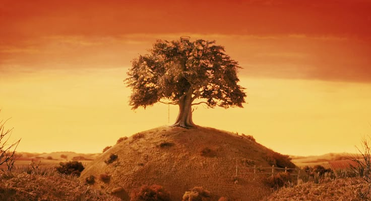

00 / INICIO
FANTASTIC
MR. FOX
Un recorrido virtual por algunos de los espacios más importantes de la película.
COMENZAR RECORRIDO →
MAPA DEL RECORRIDO
Puedes seguir el recorrido en orden o entrar directamente al espacio que quieras explorar.
AMBIENTE
Puedes escuchar este audio mientras recorres el sitio.